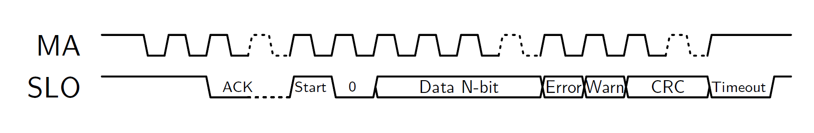

BiSS Usage Notes — Usage information about the I/O module
Speedgoat provides three BiSS code modules for the configurable I/O modules. This chapter explains, how to use them
Decoder v1 - The BiSS Decoder acts as the master component of the BiSS data communication with an encoder (slave). It therefore provides the clock to the slave and reads in the data provided by the encoder.
Encoder v1 - The BiSS Encoder module acts as the slave component of the BiSS data communication with a BiSS master. It therefore takes the clock (MA) from the master and sends the data on the SLO line.
Sniffer v2 - The BiSS Sniffer is used to observe the data between master and slave BiSS communications. Up to 64 bits of data are captured after the start detection and until the stop condition is detected (timeout).
The image below illustrates the basic timing diagram of the BiSS protocol. The driver block supports line delay compensation to achieve higher transmission frequency also with longer cables.

| Parameter | Description |
|---|---|
| ACK | This is the period during which the encoder calculates the absolute position. |
| Start | The encoder transmits the start bit to signal to the master that it is starting to transmit data. The start bit is always high. |
| "0" | A zero (always low logic) always follows the start bit. |
| Data | The data (N-bit) is in binary format and sent MSB first. |
| Error | If available in the encoder. The error bit is active low: "1" indicates that the transmitted position information is correct. |
| Warn | If available in the encoder. The warning bit is active low: "0" indicates that the encoder scale (and/or reading window) should be cleaned. |
| CRC | The CRC polynomial for position, error and warning data. 0 to 8 bits are possible, depending on the encoder. |
| Timeout | BiSS timeout. |
Because the BiSS messages length can be up to 64 bits, the BiSS Sniffer Code Module always implements two (2) 32-Bits register to hold the message. A third register indicates how many bits were captured.
These registers are updated every time a timeout condition occurs.
The following example shows the received bits if a BiSS frame with 32 databits, the Error and Warning Bit and 6 CRC bits: